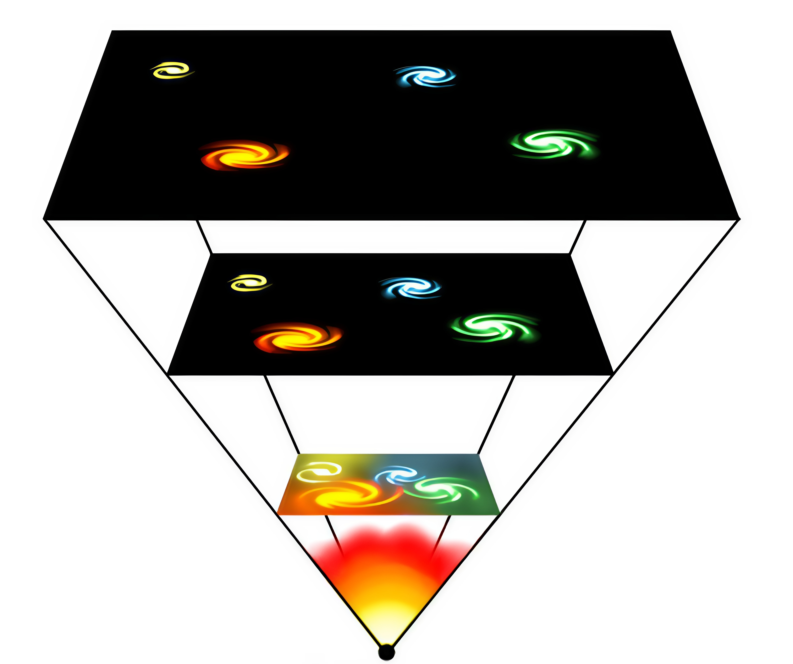

The universe is ever-expanding, and as it expands, all the matter in the universe drifts apart. If you look up into the stars today, almost everything you see is moving away from us, and at one point, everything will be so far apart that we won’t even see them in the night sky. Time will pass, and each and every star that exists will burn out and collapse into a black hole, a dead celestial body from which almost nothing can escape. Stars in the sky will burn out like candles, one by one, turning into black holes until there is no illumination in the universe anymore. Even black holes won’t last forever due to Hawking radiation; black holes will radiate out everything they contain to the point where they’ll be blown out as well.
In the far future, this might be a reality. Everything will be dark and cold, and no matter will interact in any way, nor will there be any place that could sustain life. If every single star has burned out, there won’t be a host star for a planet to orbit. The universe will exist for an infinite amount of time, and nothing within it will be able to thrive. That’s the Big Freeze—probably the most depressing way for all of existence to end.
A more exciting and action-packed theory of how the universe might end is the Big Crunch. This theory is the polar opposite of the first; as time passes, gravity might eventually overpower the universe's expansion and pull everything back toward each other. Everything will accelerate to higher and higher speeds, and eventually, the cosmos will crash in on itself. This scenario is similar to the Big Bang in that everything that would happen happened in reverse during the Big Bang. Stars and galaxies falling in on each other increase the heat and density of the cosmos.
This rapid and dense collapse might lead to the universe's rebirth. There is another theory that builds on the Big Crunch called the Big Bounce. All the matter in the universe will once again be in a singular point and might bounce back into a new Big Bang. All the matter will be shot out, expanding rapidly, colliding, and creating atoms, molecules, stars, planets, and then galaxies. This might actually be what happened before the Big Bang. Again, everything I’m explaining is just a theory, though there is reasonable evidence to back it up.
One of the more recent theories revolving around the end of existence is the Big Rip. This one is a bit more complex than the previous theories due to its implications with dark energy. What is dark energy? We don’t have a clue, yet we know that between 68% and 71% of the energy in the cosmos is dark energy. Dark energy is currently accelerating, and if it keeps this pace up, it could eventually overcome gravity and even the forces holding atoms together. At this point, dark energy would be let out of a cage and would (hence the name) tear everything real apart.
It would rend everything, going down the list from galaxies to solar systems, then planets, then humans, and finally atoms themselves. Nothing would escape the wrath of dark energy, and everything would fade away from existence—the eerie truth that everything will dissolve into a featureless, expanding nothingness. Luckily, all these horror scenarios won’t happen for billions of years. If the human race even lasts that long, I wonder if it’ll be technologically advanced enough to somehow stitch everything together or prevent anything from even happening. That’s something that the people alive today will never know.